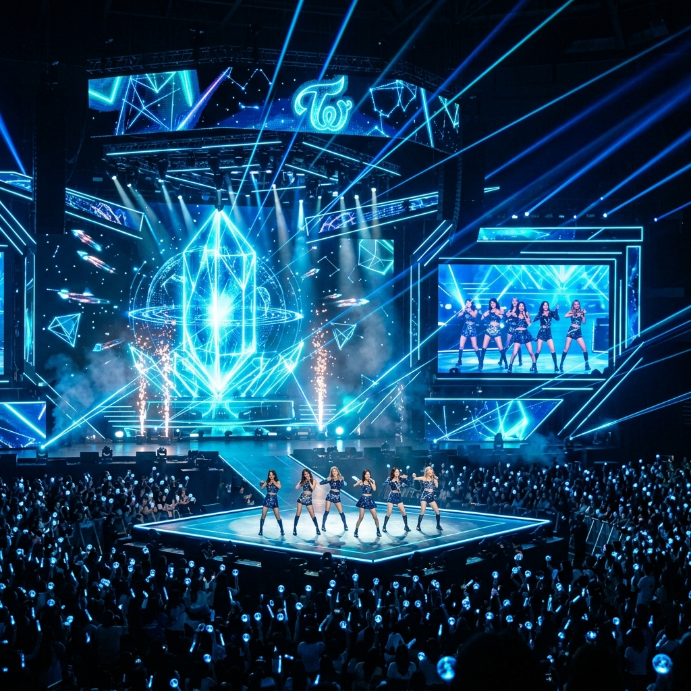

Beyond the Music.
단순한 장르를 넘어 세계적인 문화 현상으로. 위키백과가 정의하는 K-POP의 깊이 있는 역사와 체계적인 시스템을 탐험해보세요.

K-POP이란 무엇인가?
Korean Popular Music의 줄임말로, 대한민국에서 만들어진 대중음악 전반을 의미합니다. 위키백과에 따르면, 현재의 K-pop은 1990년대 초 '서태지와 아이들'의 데뷔 이후 발달한 댄스, 힙합, R&B 기반의 현대적 대중음악과 이를 아우르는 문화 현상을 총칭합니다.
음악적 특성으로는 중독성 있는 후크(Hook)와 멜로디, 그리고 팝, 댄스, 힙합 등 다양한 장르가 세련되게 혼합된 형태를 보입니다. 특히 시각적인 요소와 공연 중심의 연출이 강조되는 것이 가장 큰 특징입니다.
독창적인 기획 시스템
The Trainee & Production System
트레이닝 시스템
엔터테인먼트 사의 체계적인 관리 하에 춤, 노래, 언어 등을 교육받는 '연습생' 기간을 거쳐 완성형 아티스트로 데뷔합니다.
시각적 연출
뮤직비디오, 패션, '칼군무'라 불리는 정교한 퍼포먼스 등 음악을 듣는 것 이상으로 보는 즐거움을 극대화합니다.
강력한 팬덤 Fandom
SNS와 디지털 플랫폼을 활용해 아티스트와 실시간으로 소통하며, 아티스트의 성장을 함께 이끄는 독특한 유대감을 형성합니다.
세대별 혁신의 역사
태동기: 서태지와 아이들
1992년 데뷔를 통해 랩과 댄스 음악을 주류로 끌어올리며 현대적 K-pop의 시초를 마련했습니다. 이후 H.O.T., S.E.S. 등 1세대 아이돌이 등장했습니다.
글로벌 도약: 동방신기, 소녀시대, 빅뱅
아시아 시장을 넘어 전 세계로 영향력을 확대하기 시작한 시기입니다. 보아의 일본 성공과 '강남스타일'의 전 세계적인 히트가 이 시점의 전환점이 되었습니다.
글로벌 중심: BTS, BLACKPINK, NewJeans
빌보드 차트 점령과 월드 투어를 통해 주류 팝 시장의 핵심으로 자리 잡았습니다. 현재는 4~5세대 아티스트들이 새로운 디지털 감성으로 시장을 주도하고 있습니다.
글로벌 영향력과 미래
K-pop은 단순한 음악을 넘어 대한민국의 소프트 파워를 상징합니다. 한국 드라마, 패션, 뷰티(K-Beauty)와 연계되어 '한류'의 핵심 동력으로 작용하고 있습니다.
빌보드 200 차트 1위, 그래미 어워드 노미네이트 등 음악적 성취는 물론, UN 연설과 같은 사회적 메시지를 전달하며 전 세계 청년들에게 긍정적인 영향을 미치고 있습니다.
Diplomacy
Impact
Planning
Solidarity